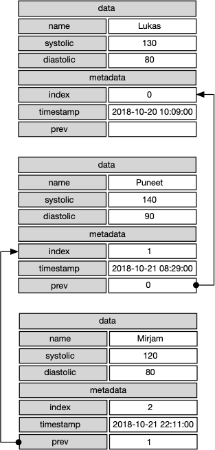

name: intro class: center, middle # Demystifying Blockchains ## A blockchain primer The University of Vienna • Nov 21, 2017 Puneet Kishor (Plazi) Released under a [CC0 Public Domain Dedication](https://creativecommons.org/publicdomain/zero/1.0/). <div class="slidefooter"> <a href="/Demystifying-Blockchains"><img src="/_lib/img/PunkishEidesisOrg-small.gif"></a> <a rel="license" href="https://creativecommons.org/publicdomain/zero/1.0/"><img src="/_lib/img/zero.png" alt="CC0" width="30" height="30"></a> <div class="navlinks"> <a href="javascript:slideshow.gotoPreviousSlide()">prev</a> <a href="javascript:slideshow.gotoNextSlide()">next</a> </div> </div> --- layout: true <div class="slidefooter"> <a href="/Demystifying-Blockchains"><img src="/_lib/img/PunkishEidesisOrg-small.gif"></a> <a rel="license" href="https://creativecommons.org/publicdomain/zero/1.0/"><img src="/_lib/img/zero.png" alt="CC0" width="30" height="30"></a> <div class="navlinks"> <a href="javascript:slideshow.gotoPreviousSlide()">prev</a> <a href="javascript:slideshow.gotoNextSlide()">next</a> </div> </div> --- ## Blockchain Is… -- <cite>“The block chain is a public record of Bitcoin transactions in chronological order. The block chain is shared between all Bitcoin users. It is used to verify the permanence of Bitcoin transactions and to prevent double spending.” – [Bitcoin](https://bitcoin.org/en/vocabulary#block-chain)</cite> In Bitcoin’s defense, they are talking about *The block chain* instead of *a blockchain.* -- <cite>“A digital ledger in which transactions made in bitcoin or another cryptocurrency are recorded chronologically and publicly.” — [Google](https://www.google.com/search?q=Dictionary#dobs=blockchain)</cite> Many blockchains do not have an associated cryptocurrency and are not recorded publicly. -- <cite>“A blockchain is a digitized, decentralized, public ledger of all cryptocurrency transactions.” — [Investopedia](https://www.investopedia.com/terms/b/blockchain.asp)</cite> Again, many blockchains are not public, and many others are not decentralized. --- ## Blockchain Is… <cite>“Blockchain technology is used in a peer-to-peer network of parties, who all participate in a given transaction.” — [IBM](https://developer.ibm.com/dwblog/2017/what-is-blockchain-hyperledger-fabric-distributed-ledger/)</cite> Except that at least for one well-publicized blockchain, the one built by [World Food Programme](https://www.wfp.org/news/news-release/blockchain-against-hunger-harnessing-technology-support-syrian-refugees), there is only one participating party: itself. -- <cite>“Because the ledger is distributed, everyone involved can see the ‘world state’ at any point in time and can monitor the progress of the transaction.” — [IBM](https://developer.ibm.com/dwblog/2017/what-is-blockchain-hyperledger-fabric-distributed-ledger/)</cite> Mastercard’s blockchain, however, is not viewable by anybody. -- <cite>“Since 2007 Estonia has been operating a universal national digital identity scheme using blockchain,” — [Harvard Business Review](https://hbr.org/2017/03/blockchain-will-help-us-prove-our-identities-in-a-digital-world)</cite> Satoshi’s Nakamoto’s [paper on the subject](https://bitcoin.org/bitcoin.pdf) was not published until October 2008. --- <div class="dim"> <h2>Blockchain Is…</h2> <p><cite>“Blockchain technology is used in a peer-to-peer network of parties, who all participate in a given transaction.” — <a href="https://developer.ibm.com/dwblog/2017/what-is-blockchain-hyperledger-fabric-distributed-ledger/">IBM</a></cite></p> <p>Except that at least for one well-publicized blockchain, the one built by <a href="https://www.wfp.org/news/news-release/blockchain-against-hunger-harnessing-technology-support-syrian-refugees" target="_blank">World Food Programme</a>, there is only one participating party: itself.</p> <p><cite>“Because the ledger is distributed, everyone involved can see the ‘world state’ at any point in time and can monitor the progress of the transaction.” — <a href="https://developer.ibm.com/dwblog/2017/what-is-blockchain-hyperledger-fabric-distributed-ledger/">IBM</a></cite></p> <p>Mastercard’s blockchain, however, is not viewable by anybody.</p> <p><cite>“Since 2007 Estonia has been operating a universal national digital identity scheme using blockchain,” — <a href="https://hbr.org/2017/03/blockchain-will-help-us-prove-our-identities-in-a-digital-world">Harvard Business Review</a></cite></p> <p>Satoshi’s Nakamoto’s <a href="https://bitcoin.org/bitcoin.pdf">paper on the subject</a> was not published until October 2008.</p> </div> # So, What is a Blockchain? --- <div class="two-col-header"> <h2 class="compact">A data table</h2> <p class="compact">An ordered collection of rows with columns of fields.</p> </div> -- .left-column[ ### A spreadsheet <table> <thead> <tr><th colspan="4">bloodpressure</th></tr> <tr><th>index</th><th>name</th><th colspan="2">bp</th></tr> <tr><th></th><th></th><th>systolic</th><th>diastolic</th></tr> </thead> <tbody> <tr><td>1</td><td>Lukas</td><td contenteditable="true">130</td><td contenteditable="true">80</td></tr> <tr><td>2</td><td>Puneet</td><td contenteditable="true">140</td><td contenteditable="true">90</td></tr> <tr><td>3</td><td>Wanda</td><td contenteditable="true">120</td><td contenteditable="true">80</td></tr> </tbody> </table> Each row is a record, and the columns are fields in every record. ] .right-column[ ] --- <div class="two-col-header"> <h2 class="compact">A data table</h2> <p class="compact">An ordered collection of rows with columns of fields.</p> </div> .left-column[ ### A spreadsheet <table> <thead> <tr><th colspan="4">bloodpressure</th></tr> <tr><th>index</th><th>name</th><th colspan="2">bp</th></tr> <tr><th></th><th></th><th>systolic</th><th>diastolic</th></tr> </thead> <tbody> <tr><td>1</td><td>Lukas</td><td contenteditable="true">130</td><td contenteditable="true">80</td></tr> <tr><td>2</td><td>Puneet</td><td contenteditable="true">140</td><td contenteditable="true">90</td></tr> <tr><td>3</td><td>Wanda</td><td contenteditable="true">120</td><td contenteditable="true">80</td></tr> </tbody> </table> Each row is a record, and the columns are fields in every record. ] .right-column[ ### An array of hashes ```js let bloodpressure = [{ index: 0, timestamp: "2018-10-20 10:09:00", data: { name: "Lukas", bp: { systolic: 130, diastolic: 80 }}, }, { index: 1, timestamp: "2018-10-21 08:29:00", data: { name: "Puneet", bp: { systolic: 140, diastolic: 90 }}, }, { index: 2, timestamp: "2018-10-21 22:11:00", data: { name: "Wanda", bp: { systolic: 120, diastolic: 80 }}, }] ``` The `array[]` is analagous to the entire table, and each `object{}` (aka JavaScript `hash`) is a record. The object has `key` and `value` pairs. ] -- <div style="clear: both;"><b>Obvious Problem:</b> One can easily tamper with the data.</div> --- <div class="two-col-header"> <h2 class="compact">Linked List</h2> <p class="compact">A data structure consisting of a collection of nodes which together represent a sequence. Each node contains: data, and a reference to the previous node in the sequence.</p> </div> .left-column[  ] .right-column[ ] --- <div class="two-col-header"> <h2 class="compact">Linked List</h2> <p class="compact">A data structure consisting of a collection of nodes which together represent a sequence. Each node contains: data, and a reference to the previous node in the sequence.</p> </div> .left-column[ ] .right-column[ ```js let bloodpressure = [{ index: 0, timestamp: "2018-10-20 10:09:00", data: { name: "Lukas", bp: { systolic: 130, diastolic: 80 }}, * prev: "" // <-- first record, so no previous record }, { index: 1, timestamp: "2018-10-21 08:29:00", data: { name: "Puneet", bp: { systolic: 140, diastolic: 90 }}, * prev: 0 // <-- previous record is record 0 }, { index: 2, timestamp: "2018-10-21 22:11:00", data: { name: "Wanda", bp: { systolic: 120, diastolic: 80 }}, * prev: 1 // <-- previous record is record 1 }] ``` ] --- ## Blockchain A linked list in which every record (except the first one) is linked to the previous link via a « cryptographic hash » ```js let bloodpressure = [{ index: 0, timestamp: "2018-10-20 10:09:00", data: { name: "Lukas", bp: { systolic: 130, diastolic: 80 }}, * prevHash: "", // <-- first record, so no previous record currentHash: "00de3a4c6be21f3bafd7e20d3f5bec90f3ce718b31c33e9a6bf52820173626c4" }, { index: 1, timestamp: "2018-10-21 08:29:00", data: { name: "Puneet", bp: { systolic: 140, diastolic: 90 }}, * prevHash: "00de3a4c6be21f3bafd7e20d3f5bec90f3ce718b31c33e9a6bf52820173626c4", currentHash: "0087f3de770c041ddc6a8ba6ab12b37968798edff1f1145820d6a6fb4e4985f2" }, { index: 2, timestamp: "2018-10-21 22:11:00", data: { name: "Wanda", bp: { systolic: 120, diastolic: 80 }}, * prevHash: "0087f3de770c041ddc6a8ba6ab12b37968798edff1f1145820d6a6fb4e4985f2", currentHash: "0094ddabdf25137b73d0ef413920f5625a27f8da859a26d321bc36eb2de6cf9d" }] ``` --- ## Cryptographic Hash The ideal cryptographic hash function has the following properties: - deterministic so the same message always results in the same hash - quick to compute the hash value for any given message - infeasible to generate a message from its hash value except by trying all possible messages - a small change to a message should change the hash value so extensively that the new hash value appears uncorrelated with the old hash value - infeasible to find two different messages with the same hash value --- ## Cryptographic Hash SHA-2 (Secure Hash Algorithm 2) is a set of cryptographic hash functions designed by the United States National Security Agency (NSA). The SHA-2 family consists of six hash functions with digests (hash values) that are 224, 256, 384 or 512 bits: SHA-224, SHA-256, SHA-384, SHA-512, SHA-512/224, SHA-512/256. <cite>Wikipedia contributors. (2018, November 14). SHA-2. In Wikipedia, The Free Encyclopedia. [Retrieved 14:13, November 17, 2018](https://en.wikipedia.org/w/index.php?title=SHA-2&oldid=868862549)</cite> We are going to use SHA-256 for our demo (this is also what Bitcoin uses for its blockchain). --- <h2>Cryptographic Hash</h2> <textarea name="textString" placeholder="enter something and click the button"></textarea> <button id="createHash">create hash</button> <div id="hashPrompt"></div> <div id="textStringHash"></div> --- ## Blockchain in JavaScript A linked list in which every record (except the first one) is linked to the previous link via a « cryptographic hash » calculated from all the data in the current record *and* the hash from the previous link. ``` class Block { constructor(index, timestamp, data, prevHash, thisHash, nonce) { this.index = index; this.timestamp = timestamp; this.data = data; this.prevHash = prevHash; this.thisHash = thisHash; this.nonce = nonce; } } class BlockChain { constructor() { this.chain = []; this.difficulty = 2; } lastBlock() { return this.chain[this.chain.length - 1] } addBlock(data) { … * thisHash = self.getHash(index, prevHash, timestamp, data, nonce); const block = new Block(index, timestamp, data, prevHash, thisHash, nonce); self.chain.push(block); } * getHash(index, prevHash, timestamp, data, nonce) { * const str = index + prevHash + timestamp + JSON.stringify(data) + nonce; * return CryptoJS.SHA256(str).toString(); * } … } let bc = new BlockChain(); const data = {"name": "Puneet", "bp": { "diastolic": 140, "systolic": 90}}; bc.addBlock(data); ``` In other words, every record is dependent on *all* previous records. Changing any record will invalidate all subsequent records *unless* their hashes are recalculated. But recalculating hashes is easy, unless… --- ## Proof of Work A Proof-of-Work (PoW) system (or protocol, or function) is an economic measure to deter denial of service attacks and other service abuses such as spam on a network by requiring some work from the service requester, usually meaning processing time by a computer. <cite>Wikipedia contributors. (2018, November 15). Proof-of-work system. In Wikipedia, The Free Encyclopedia. [Retrieved 10:53, November 17, 2018](https://en.wikipedia.org/w/index.php?title=Proof-of-work_system&oldid=869020529)</cite> In a Blockchain, PoW: - deters casual (non-serious) hackers - slows down transaction rate - makes data-tampering even more difficult --- ## Proof of Work Calculating a hash that is padded with `n` leading zeroes where `n = difficulty` ``` class BlockChain { constructor() { this.chain = []; * this.difficulty = 2; } lastBlock() { return this.chain[this.chain.length - 1] } addBlock(data) { … * let nonce = 0; * while(!this.isValidHashDifficulty(thisHash)) { * nonce = nonce + 1; * thisHash = self.getHash(index, prevHash, timestamp, data, nonce); * } } … isValidHashDifficulty(hash) { for (let i = 0, j = hash.length; i < j; i ++) { if (hash[i] !== '0') break } return i === this.difficulty; } } ``` --- ## Blockchain demo Enter some blood pressure values below and click [add] <table> <thead> <tr><th>name</th><th>systolic</th><th>diastolic</th><th></th></tr> </thead> <tbody> <tr> <td><input type="text" name="name" placeholder="name"></td> <td><input type="text" name="systolic" placeholder="systolic"></td> <td><input type="text" name="diastolic" placeholder="diastolic"></td> <td><button name="submit">add</button></td> </tr> </tbody> </table> <div id="pow"></div> <pre><code class="newdata"></code></pre> --- <h2>Blockchain demo</h2> <pre><code class="newdata"></code></pre> <button id="validate">validate</button> <div id="validationResult"></div> --- <h2>Blockchain demo</h2> <pre><code id="tamperedData" class="newdata" contenteditable="true"></code></pre> <button id="revalidate">revalidate</button> <div id="revalidationResult"></div> --- ## What Makes A Blockchain Secure? - Linked hashes: Even the slightest chance in any block renders all subsequent blocks invalid until their linked hashes are reclaculated - Proof-of-Work: Makes calculating linked hashes (mining) expensive - Size of chain: Makes mining expensive - Distributed nature: Makes mining difficult because others can mine valid blocks before you - (usually) public inspection: Anyone can inspect and validate the changes --- ## Blockchain Governance <details open> <summary>Equal Access</summary> <ul> <li>Anyone can download *all* the data and inspect it. Everyone has as much access to *all* the data as anyone else on the network.</li> <li>All changes to the blockchain are broadcast to everyone on the network.</li> <li>Block addition rate is throttled by adjusting the *difficulty* so everyone has time to get the latest data no matter which side of the globe they are at.</li> </ul> </details> <details> <summary>Consensus</summary> <ul> <li>Everyone gets a chance to validate newly added blocks before they can be added to the chain.</li> <li>In case of a fork, the longest chain wins.</li> <li>The majority of the network rejects an altered block automatically because it is no longer chained to the longest chain.</li> </ul> </details> <details> <summary>Transparency</summary> <ul> <li>Everyone can see all the data (although identities of the participants is encrypted).</li> </ul> </details> <details> <summary>Incentives</summary> <ul> <li>Reward for mining, increased value of holdings, determining future direction, social recognition, improved functionality.</li> </ul> </details> <details> <summary>Governing Structure</summary> <ul> <li>Improvement through design documents such as <a href="https://en.bitcoin.it/wiki/Bitcoin_Improvement_Proposals" target="_blank">Bitcoin Improvement Proposals</a> (BIPs) in the case of Bitcoin. This is analagous to Requests for Comments (RFCs) in the development of the internet and the web itself.</li> </ul> </details> --- ## Obvious Problems And Potential Solutions - How do you make a legitimate edit to an existing record? [Chameleon Hashes](https://eprint.iacr.org/2016/757.pdf), block versioning - Records toward the end of the chain are more susceptible to tampering than the ones toward the beginning of the chain Size, PoW and distributed nature of the blockchain are deterrents --- ## Drawbacks of Blockchains - 51% Attack: a malicious actor can rewrite the ledger if they control a majority of the computational power on the network - Energy wasting: mining (PoW) is expensive and requires vast amounts of computer power that waste energy and concentrate power in the hands of a few, well-off miners - Not good for small or non-distributed databases --- ## Proof of Stake A type of algorithm by which a cryptocurrency blockchain network aims to achieve distributed consensus. In PoS-based cryptocurrencies the creator of the next block is chosen via various combinations of random selection and wealth or age (i.e., the stake). <cite>Wikipedia contributors. (2018, November 6). Proof-of-stake. In Wikipedia, The Free Encyclopedia. [Retrieved 10:51, November 17, 2018](https://en.wikipedia.org/w/index.php?title=Proof-of-stake&oldid=867525802)</cite> <details open> <summary><a href="https://github.com/ethereum/wiki/wiki/Proof-of-Stake-FAQs" target="_blank">Ethereum PoS FAQ</a></summary> <p></p> </details> <details> <summary><a href="http://lamport.azurewebsites.net/pubs/paxos-simple.pdf" target="_blank">Paxos Made Simple</a></summary> <p>Paxos is a family of protocols for solving consensus in a network of unreliable processors (that is, processors that may fail). Consensus is the process of agreeing on one result among a group of participants. This problem becomes difficult when the participants or their communication medium may experience failures.</p> </details> <details> <summary><a href="https://raft.github.io" target="_blank">The Raft Consensus Algorithm</a></summary> <p>Raft is a consensus algorithm that is designed to be easy to understand. It's equivalent to Paxos in fault-tolerance and performance. The difference is that it's decomposed into relatively independent subproblems, and it cleanly addresses all major pieces needed for practical systems. We hope Raft will make consensus available to a wider audience, and that this wider audience will be able to develop a variety of higher quality consensus-based systems than are available today.</p> </details> <details> <summary><a href="https://en.wikipedia.org/wiki/Byzantine_fault_tolerance#Practical_Byzantine_fault_tolerance" target="_blank">Practical Byzantine Fault Tolerance</a></summary> <p>Byzantine fault tolerance (BFT) is the dependability of a fault-tolerant computer system, particularly distributed computing systems, where components may fail and there is imperfect information on whether a component has failed. In a "Byzantine failure", a component such as a server can inconsistently appear both failed and functioning to failure-detection systems, presenting different symptoms to different observers.</p> </details> --- ## Other Consensus Models ### Proof of activity ### Proof of burn ### Proof of capacity ### Proof of elapsed time --- ## Permissioned vs. Permission-less - A *permissioned* blockchain has preapproved members who can contribute to it and have the rights to validate the block transactions. A permissioned blockchain may also restrict access to approved actors who can create smart contracts. - A *permissionless* blockchain is public. Anyone can join and participate in the process of block verification to create consensus and also create smart contracts. --- ## Well-Known Blockchain Implementations <details open> <summary><a href="https://bitcoin.org/en/" target="_blank">Bitcoin</a></summary> <p>Bitcoin is a consensus network that enables a new payment system and a completely digital money. It is the first decentralized peer-to-peer payment network that is powered by its users with no central authority or middlemen.</p> </details> <details> <summary><a href="https://www.ethereum.org" target="_blank">Ethereum</a></summary> <p>Ethereum is a decentralized platform that runs smart contracts: applications that run exactly as programmed without any possibility of downtime, censorship, fraud or third-party interference.</p> </details> <details> <summary><a href="https://www.hyperledger.org" target="_blank">Hyperledger</a></summary> <p>Hyperledger is an open source collaborative effort created to advance cross-industry blockchain technologies. It is a global collaboration, hosted by The Linux Foundation, including leaders in finance, banking, Internet of Things, supply chains, manufacturing and Technology.</p> </details> --- ## Smart Contract An event-based program that triggers a transaction into the blockchain when a preset conditon is met. <cite>Pieter Arntz. 2017. Blockchain technology: not just for cryptocurrency. <a href="https://blog.malwarebytes.com/security-world/technology/2017/12/blockchain-technology-not-just-for-cryptocurrency/" target="_blank">Retrieved Nov 10, 2018</a></cite> A smart contract is a computer protocol intended to digitally facilitate, verify, or enforce the negotiation or performance of a contract. Smart contracts allow the performance of credible transactions without third parties. These transactions are trackable and irreversible. <cite>Wikipedia contributors. (2018, November 19). Smart contract. In Wikipedia, The Free Encyclopedia. <a href="https://en.wikipedia.org/w/index.php?title=Smart_contract&oldid=869532500" target="_blank">Retrieved 11:18, November 21, 2018</a></cite> --- ## Benefits of smart contracts - Design a fully-automated system wherein the appropriate action is taken when a certain condition is reached. Imagine a factory that automatically orders supplies when it is about to run out of them. - Manage huge paper trails. Each step in the paper trail can be added as a new block in the chain, and checks can be placed to ensure all conditions have been met that are needed to proceed. - Exchange vital business information in real time. Every node can contribute to and access all the information in the blocks. - Eliminate the middleman when dealing with others. The parties can interact directly and securely, by relying on the blockchain technology. - Eliminate fraud. Irreversibility makes it fraud-resistant. In a proper setup, there is no way to make unauthorized changes in already approved blocks. --- ## Pitfalls of smart contracts - The content of the contracts is visible to all participants. There are some parts of the contract that may not be suitable for public knowledge. - It’s impossible to correct errors without reversing the contract once a faulty one has been approved. - Long development and implementation is needed to replace existing solutions on a large scale. - If personally identifiable information needs to be stored, this could break local or international regulations such as GDPR. - Whether or not smart contracts are legally enforceable remains to be seen. A hybrid model that combines legal contracts with software code via smart contract templates might be of help. See [Legal Framework For Crypto-Ledger Transactions](https://wiki.p2pfoundation.net/Legal_Framework_For_Crypto-Ledger_Transactions) by Primavera de Filippi --- ## Do Definitions Matter? ### Definitions set expectations that may not be met > The bulk of the discourse around blockchain technology states simply that “immutability is a characteristic of blockchain technology.” While it is possible that any variety of the technology could yield the emergent property of immutability, this seems highly unlikely, and is definitely not yet firmly established. ### Legislation is being proposed based on definitions > Stating that “the data on the ledger is . . . immutable” in a statute does not mean that the data is immutable (i.e., unchangeable) in reality. – Angela Walch in *The Path of the Blockchain Lexicon (and the Law).* <a href="https://ssrn.com/abstract=2940335" target="_blank">36 Review of Banking & Financial Law 713. SSRN</a> --- <h2>Standards Work: <a href="https://www.iso.org/committee/6266604/x/catalogue/p/1/u/1/w/0/d/0" target="_blank">ISO/TC 307</a></h2> <div class="rssViewer"> <div class="rssItem"> <p>ISO/CD TR 23455 - Blockchain and distributed ledger technologies — Overview of and interactions between smart contracts in blockchain and distributed ledger technology systems <a href="http://www.iso.org/cms/render/live/en/sites/isoorg/contents/data/standard/07/56/75624.html" target="_blank">Read More</a></p> </div> <div class="rssItem"> <p>ISO/NP TS 23635 - Blockchain and distributed ledger technologies — Guidelines for governance <a href="http://www.iso.org/cms/render/live/en/sites/isoorg/contents/data/standard/07/64/76480.html" target="_blank">Read More</a></p> </div> <div class="rssItem"> <p>ISO/CD 22739 - Blockchain and distributed ledger technologies — Terminology <a href="http://www.iso.org/cms/render/live/en/sites/isoorg/contents/data/standard/07/37/73771.html" target="_blank">Read More</a></p> </div> <div class="rssItem"> <p>ISO/NP TR 23578 - Blockchain and distributed ledger technologies — Discovery issues related to interoperability <a href="http://www.iso.org/cms/render/live/en/sites/isoorg/contents/data/standard/07/60/76074.html" target="_blank">Read More</a></p> </div> <div class="rssItem"> <p>ISO/NP TR 23576 - Blockchain and distributed ledger technologies — Security management of digital asset custodians <a href="http://www.iso.org/cms/render/live/en/sites/isoorg/contents/data/standard/07/60/76072.html" target="_blank">Read More</a></p> </div> <div class="rssItem"> <p>ISO/AWI TS 23259 - Blockchain and distributed ledger technologies — Legally binding smart contracts <a href="http://www.iso.org/cms/render/live/en/sites/isoorg/contents/data/standard/07/50/75095.html" target="_blank">Read More</a></p> </div> <div class="rssItem"> <p>ISO/AWI 23257 - Blockchain and distributed ledger technologies — Reference architecture <a href="http://www.iso.org/cms/render/live/en/sites/isoorg/contents/data/standard/07/50/75093.html" target="_blank">Read More</a></p> </div> <div class="rssItem"> <p>ISO/AWI TS 23258 - Blockchain and distributed ledger technologies — Taxonomy and Ontology <a href="http://www.iso.org/cms/render/live/en/sites/isoorg/contents/data/standard/07/50/75094.html" target="_blank">Read More</a></p> </div> <div class="rssItem"> <p>ISO/NP TR 23246 - Blockchain and distributed ledger technologies — Overview of identity management using blockchain and distributed ledger technologies <a href="http://www.iso.org/cms/render/live/en/sites/isoorg/contents/data/standard/07/50/75063.html" target="_blank">Read More</a></p> </div> <div class="rssItem"> <p>ISO/NP TR 23244 - Blockchain and distributed ledger technologies — Privacy and personally identifiable information protection considerations <a href="http://www.iso.org/cms/render/live/en/sites/isoorg/contents/data/standard/07/50/75061.html" target="_blank">Read More</a></p> </div> <div class="rssItem"> <p>ISO/NP TR 23245 - Blockchain and distributed ledger technologies — Security risks, threats and vulnerabilities <a href="http://www.iso.org/cms/render/live/en/sites/isoorg/contents/data/standard/07/50/75062.html" target="_blank">Read More</a></p> </div> </div> --- ## Blockchains in Government source: [https://airtable.com/shreIXQjzluCxam37/tbl7qVDFKKiEcFFrc]() <table id="bcInGovt"> <thead><tr><th title="Field #1">Government Entity</th> <th title="Field #2">Project Name</th> <th title="Field #3">Current Progress</th> </tr></thead> <tbody><tr> <td><a href="http://www.ibtimes.co.uk/blockchain-based-ubitquity-pilots-brazils-land-records-bureau-1615518" target="_blank">Cartório de Registro de Imóveis</a></td> <td>Land Title Registry</td> <td>Project Incubation,Proof-of-Concept</td> </tr> <tr> <td><a href="https://diacc.ca/didc/" target="_blank">Province of British Columbia: Land Title and Survey Authority</a></td> <td>BC Land Titles and Survey Authority"s Design Challenge</td> <td>Funding Competition/Research Contest</td> </tr> <tr> <td><a href="http://bitlandglobal.com/" target="_blank">Ministry of Lands and Natural Resources</a></td> <td>Land Registry</td> <td>In-Production/Live</td> </tr> <tr> <td><a href="http://in.reuters.com/article/usa-honduras-technology-idINKBN0O01V720150515" target="_blank">El Registro de la Propiedad Inmueble</a></td> <td>Blockchain-based Land Titling System</td> <td>Decommissioned/Stopped</td> </tr> <tr> <td><a href="http://www.hkma.gov.hk/media/eng/doc/key-functions/finanical-infrastructure/Whitepaper_On_Distributed_Ledger_Technology.pdf" target="_blank">Hong Kong Monetary Authority</a></td> <td>Mortgage Loan Application POC</td> <td>Early Research,Project Incubation,Proof-of-Concept,Research Paper</td> </tr> <tr> <td><a href="http://economictimes.indiatimes.com/small-biz/security-tech/technology/blockchain-tech-is-joining-e-gov-dots-in-ap-telangana/articleshow/59330625.cms" target="_blank">State of Andhra Pradesh</a></td> <td>Blockchain-based Land Title Registry</td> <td>Project Incubation,Project in Development</td> </tr> <tr> <td><a href="http://economictimes.indiatimes.com/small-biz/security-tech/technology/blockchain-tech-is-joining-e-gov-dots-in-ap-telangana/articleshow/59330625.cms" target="_blank">State of Telangana, Centre for Development of Advanced Computing (C-DAC)</a></td> <td>Blockchain-based Land Title Registry</td> <td>Project Incubation,Proof-of-Concept</td> </tr> <tr> <td><a href="http://asia.nikkei.com/Markets/Property/Japan-to-tidy-up-scattered-property-records" target="_blank">Ministry of Justice</a></td> <td>Blockchain-based Land Registry</td> <td>Strategy Announced,Project Incubation</td> </tr> <tr> <td><a href="https://www.blockchainpilots.nl/results" target="_blank">Ministry of Finance</a></td> <td>Financing New School Buildings</td> <td>Project Incubation,Proof-of-Concept</td> </tr> <tr> <td><a href="https://www.blockchainpilots.nl/results" target="_blank">Kadaster, Gemeente Eindhoven</a></td> <td>Blockchain-based Land Registry</td> <td>Early Research,Proof-of-Concept</td> </tr> <tr> <td><a href="https://www.forbes.com/sites/laurashin/2017/02/07/the-first-government-to-secure-land-titles-on-the-bitcoin-blockchain-expands-project/#35ea8e644dcd" target="_blank">National Agency of Public Registry</a></td> <td>Blockchain-based Land Title System </td> <td>Project in Development,In-Production/Live</td> </tr> <tr> <td><a href="http://economy.gov.ru/minec/press/news/2017181003" target="_blank">Ministry of Economic Development, the Federal Service for State Registration, Cadastre and Cartography (Rosreetr), the Federal Tax Service and the Government of Moscow</a></td> <td>Land Title Registration</td> <td>Early Research,Proof-of-Concept</td> </tr> <tr> <td><a href="https://www.kairosfuture.com/publications/reports/the-land-registry-in-the-blockchain/" target="_blank">Landmäteriet</a></td> <td>Blockchain Land Registry</td> <td>Project in Development,Proof-of-Concept</td> </tr> <tr> <td><a href="http://govsale.com.ua/#/?_k=lo64u5" target="_blank">Ministry of Finance</a></td> <td>e-Auction 3.0</td> <td>In-Production/Live</td> </tr> <tr> <td><a href="http://en.interfax.com.ua/news/economic/430761.html" target="_blank">State Land Cadastre</a></td> <td>Blockchain Based Land Title System</td> <td>Strategy Announced</td> </tr> <tr> <td><a href="http://bitfury.com/content/4-press/4_13_17_the_bitfury_group_ukraine_egovernance_release.pdf" target="_blank">State Agency for e-Government</a></td> <td>Blockchain e-Governance Platform</td> <td>Strategy Announced</td> </tr> <tr> <td><a href="https://publicappointments.cabinetoffice.gov.uk/wp-content/uploads/2017/04/HM-Land-Registry-Transformation-NEBM-Person-Specification.docx" target="_blank">HM Land Registry</a></td> <td>Digital Street</td> <td>Early Research</td> </tr> <tr> <td><a href="http://www.bankofengland.co.uk/Documents/fintech/fintechpocdlt.pdf" target="_blank">Bank of England</a></td> <td>FinTech Accelerator Proof of Concept: Distributed Ledger Technology</td> <td>Project Incubation,Proof-of-Concept</td> </tr> <tr> <td><a href="https://illinoisblockchain.tech/" target="_blank">Cook County Recorder of Deeds</a></td> <td>Land Title Registry</td> <td>Early Research,Project Incubation</td> </tr> </tbody></table> --- ## So, A Blockchain Is… A distributed digital ledger technology (DLT) - with transactions (or blocks thereof) linked by timestamped, cryptographic hashes, - that may be private (permissioned) or public (permissionless), - with a mechanism for coming to a consensus about the valid state of the chain, - determined by a majority of the participants, - all of whom have equal access to all of the chain. --- ## Blockchain and GDPR # How do we implement the right to be forgotten in a technology that is designed to not forget? --- ## Bibliography <details open> <summary>Stuart Haber and Scott Stornetta. 1991. How to Time-Stamp a Digital Document. <a href="https://www.anf.es/pdf/Haber_Stornetta.pdf" target="_blank">Journal of Cryptology, Vol. 3, No. 2, pp. 99-111</a></summary> <p>The prospect of a world in which all text, audio, picture, and video documents are in digital form on easily modifiable media raises the issue of how to certify when a document was created or last changed. The problem is to time-stamp the data, not the medium. We propose computationally practical procedures for digital time-stamping of such documents so that it is infeasible for a user either to back-date or to forward-date his document, even with the collusion of a time-stamping service. Our procedures maintain complete privacy of the documents themselves, and require no record-keeping by the time-stamping service.</p> </details> <details> <summary>Satoshi Nakamoto. 2009. Bitcoin: A Peer-to-Peer Electronic Cash System. <a href="https://bitcoin.org/bitcoin.pdf" target="_blank">Bitcoin.org</a></summary> <p>A purely peer-to-peer version of electronic cash would allow online payments to be sent directly from one party to another without going through a financial institution. Digital signatures provide part of the solution, but the main benefits are lost if a trusted third party is still required to prevent double-spending. We propose a solution to the double-spending problem using a peer-to-peer network. The network timestamps transactions by hashing them into an ongoing chain of hash-based proof-of-work, forming a record that cannot be changed without redoing the proof-of-work. The longest chain not only serves as proof of the sequence of events witnessed, but proof that it came from the largest pool of CPU power. As long as a majority of CPU power is controlled by nodes that are not cooperating to attack the network, they'll generate the longest chain and outpace attackers. The network itself requires minimal structure. Messages are broadcast on a best effort basis, and nodes can leave and rejoin the network at will, accepting the longest proof-of-work chain as proof of what happened while they were gone.</p> </details> <details> <summary>Giuseppe Ateniese, Bernardo Magri, Daniele Venturi, and Ewerton Andrade. 2016. Redactable Blockchain – or – Rewriting History in Bitcoin and Friends. <a href="https://eprint.iacr.org/2016/757.pdf" target="_blank">Eprints</a></summary> <p>We put forward a new framework that makes it possible to re-write or compress the content of any number of blocks in decentralized services exploiting the blockchain technol- ogy. As we argue, there are several reasons to prefer an editable blockchain, spanning from the necessity to remove inappropriate content and the possibility to support applications requiring re-writable storage, to “the right to be forgotten.”</p> </details> <details> <summary>Angela Walch. 2017. The Path of the Blockchain Lexicon (and the Law). <a href="https://ssrn.com/abstract=2940335" target="_blank">36 Review of Banking & Financial Law 713. SSRN</a></summary> <p>The terminology around blockchain technology is notoriously confusing, with disputes over whether a blockchain is the same as a distributed ledger, or whether an appcoin is the same as a protocol token. In this article, I examine the difficulties the rapidly shifting, contested vocabulary poses for regulators seeking to understand, govern, and potentially use blockchain technology, and offer suggestions for how to fight through the haze of unclear language.</p> </details> <details> <summary>James Hazard and Helena Haapio. 2017. Wise Contracts: Smart Contracts that Work for People and Machines (February 23, 2017). Erich Schweighofer et al. (Eds.), Trends and Communities of Legal Informatics. <a href="https://ssrn.com/abstract=2925871" target="_blank">Proceedings of the 20th International Legal Informatics Symposium IRIS 2017</a>. Österreichische Computer Gesellschaft, Wien 2017, pp. 425–432 (ISBN 978-3-903035-15-7); Jusletter IT.</summary> <p>Modern economies are held together by innumerable contracts. However, current contracts are neither machine-readable nor easily human-readable. The Ricardian Contract paradigm of parameters, prose and code posits a hybrid model of automation and conventional legal text. This paper connects recent work on design criteria for 'Smart Contract Templates' with prose objects and prototype inheritance demonstrated at CommonAccord. Templates authored and shared as prose objects can become the basis for automation, codification, commentary, big data analysis and graphic presentations.</p> </details> --- name: realtime ## Blockchain Is Real ### Here are the Bitcoin transactions in the last hour <pre><code id="latestBtc" class="json"></div></pre> --- ## Acknowledgements - Blockchain demo code forked from [Blockchain CLI](https://github.com/seanjameshan/blockchain-cli) - Conversations with [Oshani Seneviratne](https://idea.tw.rpi.edu/people/oshani), Director of Health Data Research in the Health Empowerment by Analytics, Learning, and Semantics (HEALS) Project at the Institute for Data Exploration and Applications (IDEA) at the Rensselaer Polytechnic Institute (RPI).